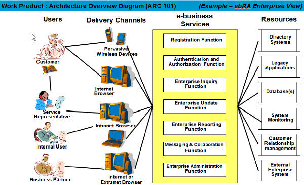
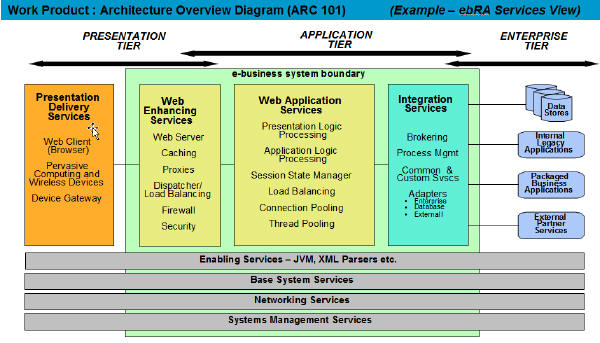
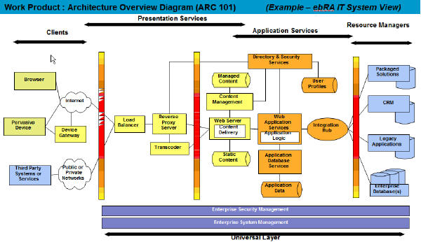

| Example: Architecture Overview Diagram for Team Solution Design |
 |
|
| Related Elements |
|---|
The following sample diagram is taken from the ESS e-business reference architecture V2.0. This architecture can be viewed as a four-tier model. The following illustrates a few example responsibilities of the high level components or nodes within these tiers. This information may be limited initially. Additional detail can be developed later, especially as the component and operational models are developed.
The purpose of the architecture overview diagram is to disclose the basic ideas of the application architecture. It is most important to capture those aspects of the architecture that can support a high level walkthrough of the architecture and how it supports the application requirements and constraints. For example, the integration hub and web application server nodes are key ideas that must be illustrated. It is not as important at this stage to know for sure what specific protocols, technology or products will be used, although the client may be interested in your preliminary candidates. The exception to that is to capture customer preferences and constraints such as "MQ must be used to connect to the legacy system" or "I am very interested in using MQSI for routing and transformation". All of the lower levels of detail will be filled in as this diagram is used as input to create the component and operational models. There is no single correct way to draw this diagram. Use a reference architecture as a starting point as in this example. Be sure the diagram captures the basic ideas and can support a discussion of "how it will work" and what alternatives could exist for various aspects of the architecture. This view emphasizes users, delivery channels and major functional components. Another view might emphasize geographic issues.  This diagram emphasizes a services view.
 The following diagram represents an enterprise view of the architecture and illustrates the value of multiple views in the architecture overview.

|
© Copyright IBM Corp. 1987, 2016 All Rights Reserved |